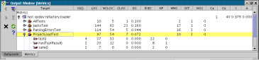

Metrics calculate various measures for projects, packages, types, members, and constructors. Metrics are guidelines for where something in the application might need refinement and changes.

Metrics results can be saved to files in various formats, so they can be analysed by spreadsheet tools, or, for example, sent via e-mail to the development team as part of the nightly build. To do this - select "Export" on the Results Panel.
The following lists metrics that are available in RefactorIT - click on a metric for more information and recommended thresholds. If a metric field is white in the window, then the metric value is within specified thresholds. Otherwise, the level of red pigment for the field indicates how unsatisfactory the value is for your a priori bounds.
| Name: | Description: |
|---|---|
| Abstractness (A) | This metric counts the ratio of abstract classes and interfaces for a package |
| Afferent Coupling (Ca) | This metric counts the number of classes from other packages that depend on classes in the analysed package |
| Comment Lines of Code (CLOC) | CLOC counts all lines that contain regular comments and Javadoc comments |
| Cyclic Dependencies (CYC) | This estimates how many cycles in which a package is involved |
| Cyclomatic Complexity (V(G) aka CC) | V(G) counts the number of code conditions giving an indication of how complex the program is |
| Density of Comments (DC = CLOC / LOC) | This determines a density value for how commented the code is |
| Dependency Inversion Principle (DIP) | The DIP metric calculates the ratio of dependencies that have abstract classes or interfaces as a target |
| Depth in Tree (DIT) | This is the distance from the class to the root of the inheritance tree |
| Direct Cyclic Dependencies (DCYC) | Direct cyclic dependencies counts every mutual dependency between packages |
| Distance from the Main Sequence (D) | The perpendicular distance of a package from the main sequence |
| Efferent Coupling (Ce) | This metric is a measure for the number of types of the analysed package which depend upon types from other packages |
| Encapsulation Principle (EP) | This calculates the ratio of classes that are used outside of a package |
| Executable Statements (EXEC) | This metric counts the number of executable statements |
| Instability (I = Ce / (Ca + Ce)) | Check to see how stable/unstable your packages are designed |
| Limited Size Principle (LSP) | This is the number of direct subpackages of a package |
| Modularization Quality (MQ) | The difference between the average inter- and intra-connectivity of the packages |
| Non-Comment Lines of Code (NCLOC, aka NCSL and ELOC) | This counts all the lines that do not contain comments or blank lines |
| Number of Abstract Types (NOTa) | This metric counts the number of abstract classes and interfaces |
| Number of Children in Tree (NOC) | This metric measures the number of direct subclasses of a class |
| Number of Concrete Types (NOTc) | This metric counts the number of concrete classes |
| Number of Exported Types (NOTe) | This metric counts the number of classes and interfaces exported outside a package |
| Number of Parameters (NP) | This metric counts the number of parameters for a method or a constructor |
| Number of Types (NOT) | This metric counts the number of classes and interfaces |
| Response for Class (RFC) | This metric counts the number of distinct methods and constructors invoked by a class |
| Total Lines of Code (LOC, aka SLOC and ELOC) | The number of lines for a class including blank lines and comments |
| Weighted Methods per Class (WMC) | This calculates the sum of cyclomatic complexity of methods for a class |
| Number Of Fields (NOF) | This calculates the number of fields declared in method (in local and anonymous classes declared in this method) |
| Number Of Attributes (NOA) | This calculates the number of fields declared in class or interface |
This metric documentation is based on various sources. Definitions and information can be found at the following locations:
http://satc.gsfc.nasa.gov/metrics/codemetrics/oo/thresholds/index.html
http://www.ingrid.org/jajakarta/turbine/en/turbine/maven/reference/metrics.html
http://www.objectmentor.com/resources/articles/Principles_and_Patterns.PDF
http://javacentral.compuware.com/products/optimaladvisor/documentation/v3.1/2037-1-15-18-8.html
http://javacentral.compuware.com/pasta/concepts/packageDesign.html
http://www.sei.cmu.edu/str/descriptions/cyclomatic_body.html
http://www.cin.ufpe.br/~inspector/relacionados/Object-oriente%20Model%20Metrics%20Document.htm
http://www.fawcette.com/archives/premier/mgznarch/vbpj/1999/09sep99/cs0999.pdf